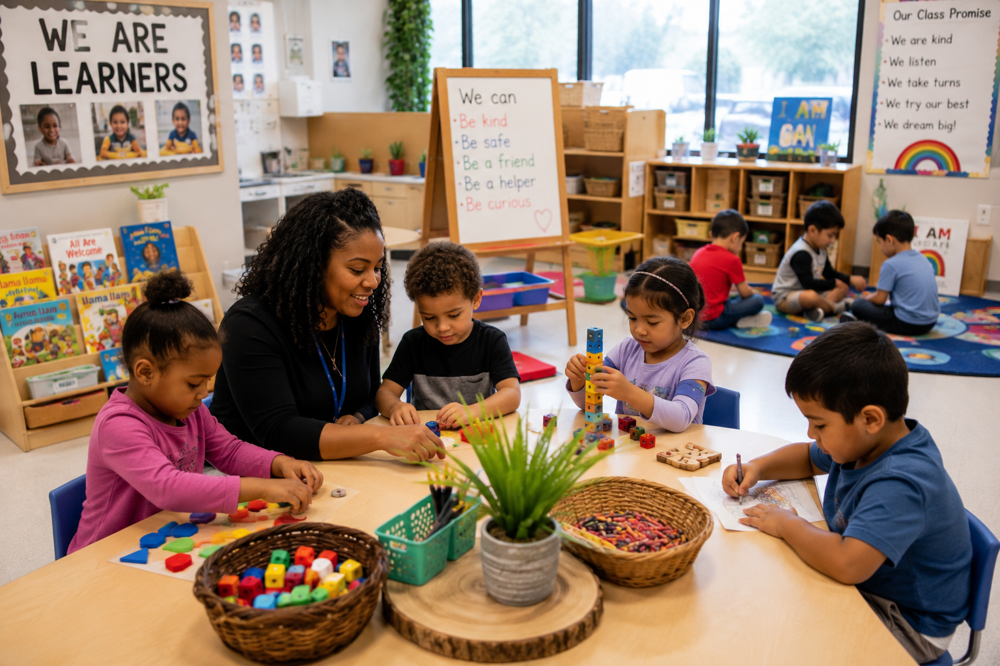

Literacy
Language & Literacy
Interactive reading, storytelling, writing, alphabet exploration, vocabulary, and oral language experiences.
Engaging lesson plans for children ages three through five that inspire curiosity, creativity, critical thinking, and school readiness through meaningful play, hands on investigations, and rich learning experiences aligned with the Head Start Early Learning Outcomes Framework.
Head Start classrooms encourage children to investigate, create, communicate, and solve problems through intentional play. Every lesson supports school readiness while nurturing confidence, independence, curiosity, and a lifelong love of learning through meaningful relationships and engaging experiences.

High quality Head Start classrooms create meaningful learning experiences that support the whole child.
Warm, respectful relationships create safe environments where children confidently explore, communicate, and grow.
Children investigate real questions, test ideas, observe, predict, and discover through active exploration.
Purposeful play strengthens language, mathematics, science, creativity, and social emotional development.
Families and teachers work together to support children's growth, learning, and school readiness.
Weekly Lesson Plans
Learning Experiences
ELOF Domains
Play Based Learning
Discover engaging lesson plans that promote school readiness through hands on investigations, meaningful play, and intentional teaching.
Interactive reading, storytelling, writing, alphabet exploration, vocabulary, and oral language experiences.

Counting, sorting, measuring, patterns, geometry, number sense, and problem solving.

Hands on investigations that encourage questioning, observing, predicting, and experimenting.

Painting, sculpture, dramatic play, music, movement, and open ended creative expression.
Build learning around meaningful investigations that grow with children's questions and interests.
Investigate homes, schools, bridges, neighborhoods, and construction.
Explore floating, sinking, rain, ice, rivers, oceans, and water conservation.
Observe plants, trees, insects, weather, rocks, and seasonal changes.
Learn about pets, habitats, life cycles, and caring for living things.
Compare fabrics, weather clothing, cultures, and self help dressing skills.
Celebrate family traditions, relationships, homes, and communities.
Well designed learning centers encourage children to investigate, collaborate, create, and solve problems independently.
Encourage engineering, measurement, teamwork, and imaginative building experiences.
Create cozy spaces filled with quality children's literature, storytelling props, and writing materials.
Offer open ended art experiences that encourage creativity and self expression.
Provide magnifying glasses, natural materials, measuring tools, and science investigations.
Support social development through pretend play, costumes, puppets, and role playing.
Encourage drawing, journaling, labeling, and emergent writing throughout the day.
Intentional teaching helps children build confidence and independence before kindergarten.
Recognize letters, hear sounds, enjoy books, tell stories, and build vocabulary.
Count, compare, measure, recognize patterns, and solve everyday mathematical problems.
Practice cooperation, friendship, empathy, communication, and conflict resolution.
Develop attention, memory, self regulation, planning, persistence, and flexible thinking.
Families are children's first teachers. Strong partnerships between home and school create meaningful learning experiences that continue beyond the classroom.
Encourage families to read together daily while discussing pictures, asking questions, and sharing stories.
Take neighborhood walks, visit parks, observe nature, and investigate the world together.
Share games, puzzles, building activities, cooking experiences, and imaginative play at home.
Talk about the day's experiences, celebrate accomplishments, and encourage children to express their ideas.
Every lesson plan intentionally supports children's development across all ELOF domains.
Build confidence, friendships, empathy, emotional regulation, and positive relationships.
Strengthen vocabulary, conversations, comprehension, storytelling, writing, and early reading skills.
Develop reasoning, memory, mathematical thinking, scientific inquiry, and creative problem solving.
Support fine motor coordination, gross motor development, health, safety, and self care skills.
Encourage curiosity, persistence, initiative, flexibility, creativity, and independence.
Create respectful classroom communities where children learn to cooperate, communicate, and care for one another.
Authentic assessment helps teachers understand children's growth and plan meaningful next steps.
Watch children during play, conversations, investigations, and routines to understand their development.
Save artwork, writing samples, photographs, and teacher notes throughout the school year.
Use documentation to individualize instruction and extend children's interests.
Celebrate children's progress while collaborating with families to support continued growth.
Purposefully designed environments encourage independence, curiosity, collaboration, and joyful learning.
Organize materials on child accessible shelves that encourage independence and exploration.
Include wood, plants, loose parts, baskets, shells, stones, and natural textures throughout the classroom.
Refresh classroom materials regularly to maintain curiosity and encourage deeper investigations.
Celebrate children's thinking with photographs, artwork, documentation panels, and classroom books.
Support intentional teaching with practical planning tools and classroom resources.
Flexible weekly planning templates that support inquiry based investigations and child led learning.
Document children's interests, developmental progress, and meaningful learning experiences.
Access classroom labels, visual schedules, learning center signs, and assessment tools.
Strengthen teaching practices through reflection, collaboration, coaching, and ongoing professional learning.
Excellent teaching begins with continuous learning, reflection, collaboration, and a commitment to developmentally appropriate practices.
Plan experiences that respect children's individual development, interests, cultures, and learning styles.
Use observations and documentation to evaluate teaching practices and improve classroom experiences.
Work alongside families, coaches, specialists, and colleagues to support every child's success.
Celebrate successes while seeking new strategies that strengthen learning and school readiness.
Download classroom resources designed to support planning, assessment, family engagement, and intentional teaching.
Organize investigations, learning centers, small groups, and intentional teaching experiences.
Record children's conversations, interests, developmental progress, and classroom discoveries.
Strengthen family partnerships with engaging activities that continue learning beyond the classroom.
Create organized, inviting classroom environments using printable center signs and visual supports.